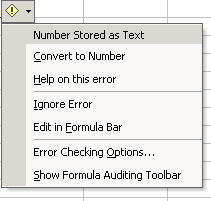
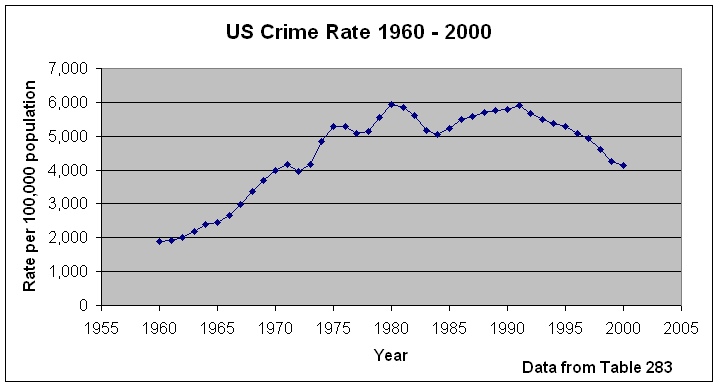

Quantitative Reasoning ISP 120 Final Project
Task: You are a team of journalists, and your task is to research and write an article along the lines of Chicago's Tolerance for Murder in the Chicago Tribune. Your source is the 2004 Statistical Abstract of the US. You must first choose a specific topic under the general headings of crime, health, vital statistics, etc. For example, the Tribune article narrowed down the vast area of crime to look specifically at homicide. Using several tables (a minimum of three) from the Statistical Abstract, you will a 5 to 8 page paper in the form of a newspaper article, analyzing the data and presenting a composite picture of your topic. You will present your findings to the class in a 10 minute PowerPoint presentation.
You may do any topic EXCEPT HOMICIDE for your project, with the instructor's approval.
Guidelines:
(1) Paper
· The paper is to be prepared in Word and be at least 3 pages in length, excluding charts and graphs. The total length including graphs and charts should be no longer than 8 pages.
· Your analysis should use three related tables in the Statistical Abstract.
· Your analysis should include one mathematical model and a prediction based on it.
· Your paper should have a well-written introduction and conclusion.
· Use proper bibliographic references; in particular, refer to the tables you use by number.
· Where appropriate, don't forget to bring in ideas from the course such as percentage change, rates, and consumer price index.
(2) Presentation
· The presentation is no more than 10 minutes long, followed by a few minutes for questions from the audience.
· All group members must participate in the presentation.
· You must use the computer to display your charts.
Due Dates: Papers are due no later than the beginning of class on the date stated in the syllabus. An optional draft may be handed in no later than two weeks before the paper is due, and is advised. For each class session or portion of a class session that the paper is late, there is a one-half grade late penalty. If you turn it in 10 minutes after class starts, it is one day late. The presentations will take place during the last one or two days of class and will be in the classroom rather than in the lab.
What to Submit:
1) A paper copy of your paper with a statement signed by all group members that
all fully participated in the work.
2) An electronic version of the paper. This can be submitted via email or by giving me a floppy disk.
3) An electronic version of the presentation. This can be submitted via email or by giving me a floppy disk.
Quantitative Reasoning papers and presentations are archived as a precautionary measure.
Grading: The written part of the final project will count for 20% of your final grade; the presentation, 10%.
Getting together: When doing this project, most groups meet outside of class to some extent, because only a limited amount of class time will be devoted to it. Since the groups are chosen randomly, some groups will have more difficulty than others in finding common meeting times. If your group finds it hard to get together, you must be creative in finding ways to collaborate. Some ways to collaborate without physically meeting are using the telephone, using email, and exchanging drafts when you come to class.
Finding data files:
The Statistical Abstract of the US is available in book form in virtually every library, in particular in DePaul's Richardson Library (first floor reference room, main desk). A portable data format (pdf) version of the book is available from the Bureau of Census. (Note that we are using the 2004 edition which is the most recent available; do not use the data from previous years because it is not as up to date. If you want to supplement your data with older data values, you might find it useful to look at the 1995 Statistical Abstract. However, the table numbers will not be the same.) Excel files corresponding to the tables are available in Quantitative Reasoning Center at Statistical Abstract Data Files.
Commonly Encountered Problem When Making Graphs From The Files
Frequently, when making graphs from the Excel files which we have purchased for your use, you will find that the years on the x-axis will appear incorrectly on XY (Scatter) graphs. The data points will appear as numbers, 1, 2, 3, etc. We believe this problem occurs because the data files were prepared in Lotus 1-2-3 and then converted to Excel; in the conversion process, there is a formatting incompatibility. To work around this problem, delete the years and retype them. This process doesn't take very long, and your graph will be as you intended it. In Excel 2002, often there will be a little warning next to the cell with a year value in in it. If you select all the the years and then click on the warning you will get a menu that looks like

Choose "Convert to Number" to fix the format of the cells.
Proper Bibliographic References
At the end of your paper, you probably should have something like
References
U.S. Census Bureau, Statistical Abstract of the United States: 2004 (122nd Edition) Washington, DC, 2001. Tables 431, 443, and 449.
If you reference other books, you should include them too, including the page numbers. If you reference data from the web, you should include a reference of the form
Snell, T. and L. Maruschak, "Capital Punishment 2001," U.S. Department of Justice http://www.ojp.usdoj.gov/bjs/pub/pdf/cp01.pdf (accessed 8/29/2003).
Sometimes you won't be able to determine the author; in that case, leave it out.
I highly recommend the practice of using the drawing toolbar to write the table number you are using directly on the graph such as

To get the drawing toolbar, click on View->Toolbars and make sure Drawing is clicked. At the bottom of your screen will appear the drawing toolbar that looks like:
Click on the icon, draw a rectangle with your mouse on your graph and type in the annotation.